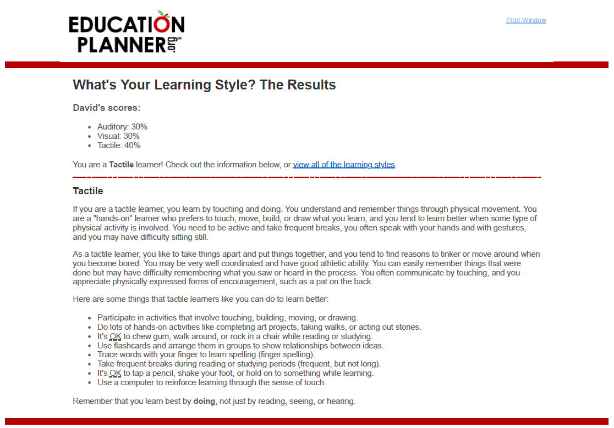
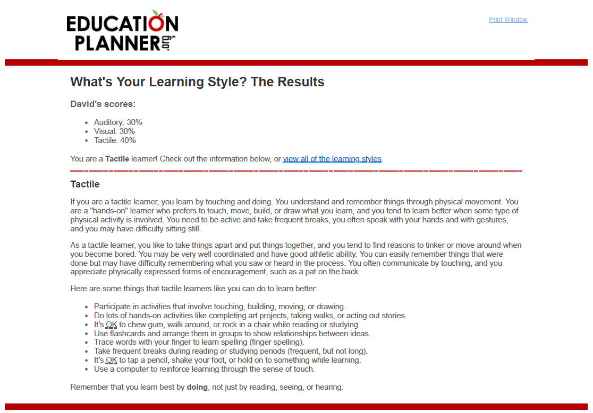

Personal Profile
 


Personal Interpretation
The completion of “What’s Your Learning Style” states that I am a tactile learner who learns best during hands-on activities such as meetings and plotting ideas and notes on a whiteboard. Nonetheless I am still versatile in absorbing content through visualisation and listening. On the other hand, the two other test provides no meaningful weight towards me, but as a simple reinforcement of who I am, as I am 100% conscious and aware of who I am, my capabilities and limitations. As the tests details that I am imaginative and had run through endless scenarios and environments in my mind, dove into the thesis of metaphysics of identity and currently reading the map of soul by Murray Stein.
Team influence
My personality will always determine the atmosphere of the team and its functionality however my behaviour will have a minor consequence towards the team. Regarding productivity, forming meaningful relations within the team, henceforth, provides higher efficiency and a solid foundation throughout projects and initiatives. The troublesome part is identifying the different learning styles each member has is crucial. As projects cannot always be hands-on but rather versatile to accommodate everyone.
Subject to the roles and responsibilities of the job, I will do no less no more than what the job description requires.
Forming a team
The Big 5 Personality details my personality as a “commanding leader” who is straightforward and blunt to achieve the objective. However, it is best to have a second in command if my approach towards the team is deem excessive. Kinaesthetic learner would ideally work with other tactile learners for a stronger efficiency. Except acquiring specific available colleagues is implausible. Hence acknowledging the different type of learners and provide flexible catering of delivery of information.